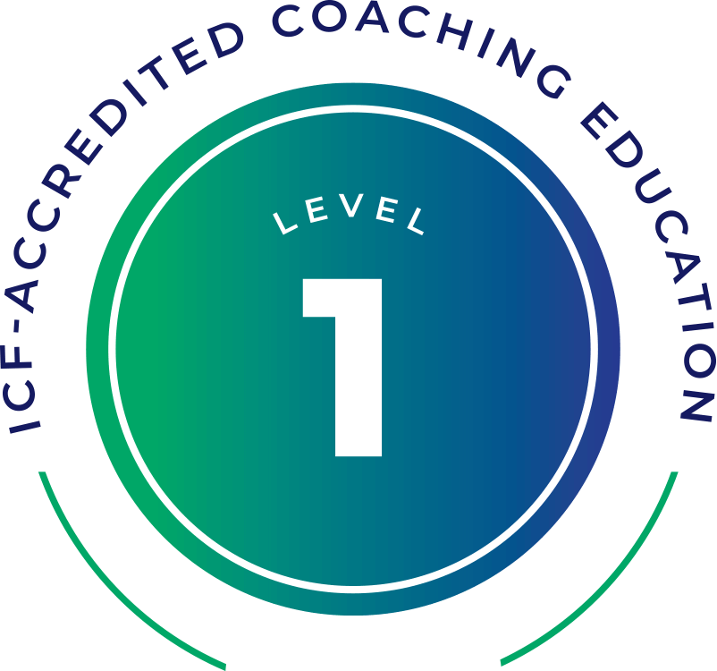

Desarrolla competencias intrapersonales, ejecutivas y extra-personales de alto nivel. Formación intensiva de 9 meses con enfoque dual como Coach Profesional y Speaker Vivencial.
Nuestra formación cumple rigurosamente los requerimientos globales para habilitarte como Coach Credencializado ACC y PCC ante la ICF.

ICF Level 1
Coach OntológicoDiseñado para que obtengas las 100 horas de conversación práctica auditada exigidas internacionalmente.
Metodología propia basada en la provocación de ideas innovadoras que optimiza los tiempos de intervención.
Aprende a diseñar y facilitar tus propias conferencias, talleres y entrenamientos interactivos de alto impacto.
Al certificar, podrás acceder a horas pagas de coaching con terceros en nuestra plataforma oficial.
No necesitas elegir una sola rama al iniciar. Nuestro programa incluye los conocimientos, herramientas y habilidades fundamentales para desempeñarte profesionalmente en diversas orientaciones, permitiéndote luego realizar profundizaciones específicas en los ámbitos de tu interés.
El programa te capacita para acompañar a CEOs, directores y gerentes a potenciar su liderazgo estratégico, optimizar la toma de decisiones bajo alta presión y alinear sus metas personales con los resultados de la organización.
Competencias ejecutivas integradas en el plan de estudios único de la certificación.
Un recorrido continuo de 9 meses estructurado para llevarte desde las bases del ser hasta la maestría profesional.
Instantes reales de nuestros talleres presenciales, dinámicas de coaching ontológico y presentaciones de Speaker Vivencial.
Trabajo profundo e intra-personal en grupos reducidos de alto compromiso.
Mentoring continuo para alcanzar los estándares de performance exigidos por ICF.
Desarrollo de oratoria, presencia escénica y facilitación interactiva.
Historias reales de transformación personal y expansión profesional en Hispanoamérica y Estados Unidos.
Se aprende mucho! Imposible describirlo en pocas palabras. Es ser. Un proceso que cambió radicalmente mi perspectiva personal y profesional.
Cada día con cada nueva distinción que aprendo la llevo a mi vida diaria y la verdad poco a poco hacer esta certificación está cambiando mi vida. En total agradecimiento.
La confianza de los entrenadores para invitarme a compartir un proceso maravilloso. Me siento privilegiado por esto, ¡gracias es poco!
Pude optimizar recursos en momentos complejos. Alineé mis proyectos a mi pasión: descubrir mi don, ponerlo al servicio y generar valor real sustentable.
Aprendí a reconocer las áreas de mi vida en las que debo hacer ajustes, ser más consciente de mis interpretaciones para manejar mis emociones, y SER conexión.
Gané herramientas y distintas formas de percibir conceptos, entendiendo cómo explicarlos de forma práctica, sencilla y accionable en organizaciones.
Selecciona la modalidad de pago que mejor se adapte a tus necesidades de presupuesto ejecutivo.
Garantizamos un grupo selecto de alto nivel profesional y compromiso humano.
Completa tu formulario con tu perfil profesional, metas e interés de certificación.
Reunión de alineación con nuestro equipo de admisiones para evaluar tu encaje con el programa.
Alineación de tu perfil y exploración de los ámbitos donde proyectas aplicar el coaching.
Matrícula formal e incorporación a la comunidad internacional EPHIS 2026.
Si te apasiona la visión de transformar personas y organizaciones, el momento de dar el paso es ahora. Únete a la nueva cohorte internacional.